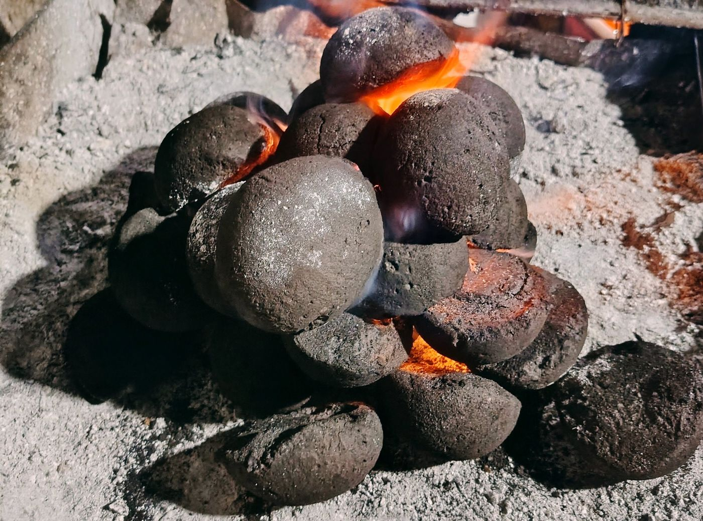

Residuos que se vuelven recursos
Qué dice la información técnica disponible sobre estos residuos, qué genera nuestro proceso y cómo lo reducimos. Con fuentes y sin exagerar.
Así se ve el ciclo



Dos residuos, dos soluciones
El problema
Es un residuo agrícola voluminoso y de descomposición lenta por su alto contenido de lignina. Se acumula o se quema al aire libre, donde la combustión es incompleta y genera humo y partículas.
Lo que hacemos
La carbonizamos en un proceso controlado y la convertimos en briqueta de carbón.
Resultado
Un residuo local se vuelve combustible útil, y no se quema a cielo abierto.
El problema
Contiene hidrocarburos, aditivos y metales que se desprenden del desgaste del motor. Si se vierte al suelo, al drenaje o a un río, forma una película que reduce el oxígeno en el agua y contamina el suelo.
Lo que hacemos
Lo reutilizamos como combustible del equipo de nuestro proceso, en lugar de dejarlo desecharse.
Resultado
Un residuo industrial peligroso se aprovecha como energía.
El problema
El carbón vegetal tradicional se produce con leña y presiona los recursos forestales.
Lo que hacemos
Producimos carbón a partir de un residuo agrícola, no de árboles.
Resultado
Una alternativa que no requiere talar bosque.
Datos técnicos de fuentes públicas
Estos datos vienen de estudios y organizaciones citados al final. No son mediciones de nuestra planta: son el contexto que justifica por qué reutilizar estos residuos.
Residuos de coco (cáscara y fibra)
Aceite automotriz usado
Carbón de residuos agrícolas frente a la leña
Lo que se sabe de nuestro país
La información pública local es limitada y parte de ella es antigua. Aquí va lo que encontramos, con su fecha, y sin completar los vacíos con suposiciones.
No encontramos una norma específica y vigente que podamos citar aquí sobre el manejo y la quema de aceite usado en Guatemala, y por eso no afirmamos cumplir ninguna en concreto. Nos comprometemos a consultar y cumplir lo que apliquen el MARN y el Ministerio de Energía y Minas.
Qué contamina, cuánto y qué hacemos nosotros
Cáscara de coco
Nivel de riesgo: moderado y sobre todo local. No es un residuo tóxico, pero acumulado genera mosquitos, metano al pudrirse, humo al quemarse y obstrucción de cauces.
Lo que hace GEA ECOCOCO: la recibimos, la carbonizamos y la transformamos en briqueta de carbón.
Beneficio: menos residuo acumulado o quemado al aire libre, y un combustible hecho en la región.
Aceite automotriz usado
Nivel de riesgo: alto si se desecha mal. Contiene metales pesados e hidrocarburos tóxicos, y una cantidad pequeña puede contaminar un gran volumen de agua.
Lo que hace GEA ECOCOCO: lo reutilizamos como combustible del equipo de nuestro proceso, filtrado y con combustión controlada.
Beneficio: ese aceite deja de verterse y se aprovecha como energía, sin comprar combustible nuevo.
Leña para carbón
Nivel de riesgo: presión sobre los recursos forestales cuando el carbón se fabrica con árboles.
Lo que hace GEA ECOCOCO: fabricamos carbón con un residuo agrícola.
Beneficio: una alternativa de carbón que no requiere talar árboles.
No tenemos aún cifras propias de toneladas de cáscara aprovechadas, litros de aceite reutilizados ni emisiones de la planta. Las publicaremos en la Bitácora cuando estén medidas. Preferimos decirlo así a inventar números.
Sin esconderlo: toda combustión genera emisiones
Quemar cualquier combustible, incluido el aceite reciclado, genera dióxido de carbono (CO₂), vapor de agua y, si la combustión es incompleta, humo, partículas y monóxido de carbono. La carbonización de la cáscara también libera gases. No existe un proceso industrial sin emisiones, y no vamos a decir lo contrario.
Lo que sí hacemos es reducirlas y controlarlas desde el diseño.
Cómo las controlamos
- Combustión controlada: regulamos la relación aire-combustible en el quemador, porque una combustión completa genera menos humo y partículas.
- Filtración del aceite: se filtra el aceite usado antes de quemarlo para retirar impurezas.
- Carbonización en cámara cerrada: la cáscara se transforma con poco oxígeno, en lugar de quemarse al aire libre.
- Equipos separados y seguridad de llama: diseñados con controles para evitar fallas de combustión.
Lo que nos comprometemos a hacer
Economía circular
Cada residuo del proceso se reutiliza como insumo o como energía de otro paso.
Transparencia
Publicamos el avance real en la Bitácora, con los resultados de pruebas cuando estén medidos.
Mejora continua
Medimos, corregimos y mejoramos el equipo conforme avanzamos en la operación.
Cumplimiento
Nos comprometemos a operar conforme a la normativa ambiental aplicable en Guatemala.
Un producto con historia que se puede contar
Si tienes una tienda, un restaurante o una parrilla, ofreces un carbón hecho de residuo de coco local, con un proceso que reutiliza aceite automotriz usado y no usa leña. Es una razón más para que tus clientes lo prefieran.
- MAGA, Ficha de mercado: coco verde de primera, mayorista (Guatemala, 2017).
- CEPAL, Tres de cada cuatro viviendas en Guatemala utiliza leña para cocinar.
- Tott Román, C. R. (1994), Disposición de aceite lubricante usado, Universidad del Valle de Guatemala.
- Stelte et al. (2023), Review: Coir and coconut waste, raw materials and applications, BioResources 18(1).
- Stormwater Center, Used Oil Recycling (cita datos de la EPA de EE. UU.).
- Ashden, Sustainable Green Fuel Enterprise (Camboya).
- atmosfair, Cambodia: char-briquettes made from agricultural residues.
- Yirijor y Bere (2024), Production and characterization of coconut shell charcoal-based bio-briquettes, Heliyon.
La información de esta página es descriptiva y de carácter general. Las mediciones propias de nuestra planta (emisiones, consumos, rendimientos) se publicarán en la Bitácora cuando estén realizadas.